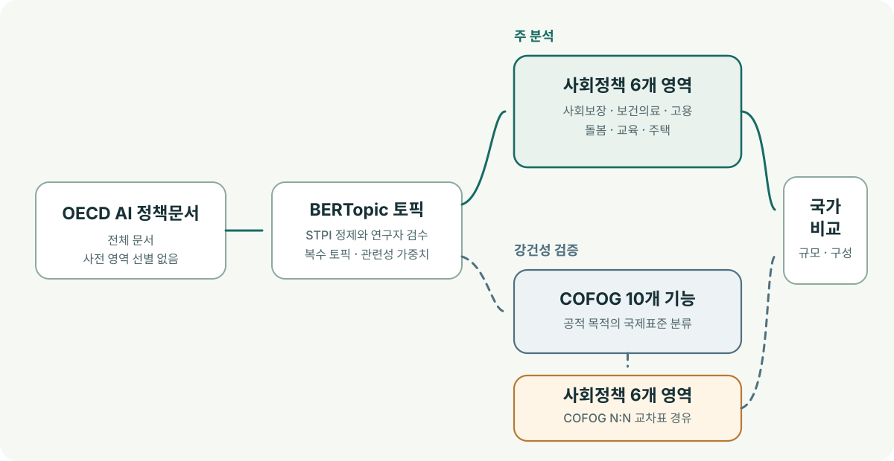
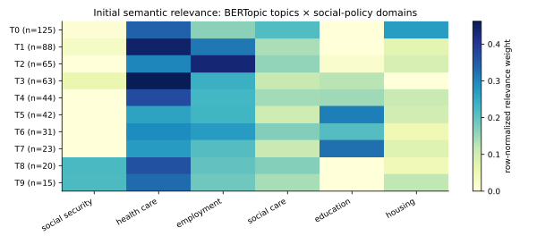
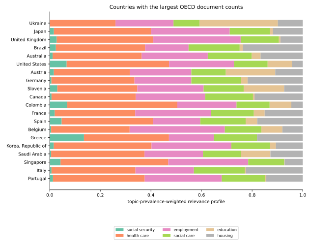

주 분석
전체 AI 정책 토픽 → 사회정책 6개 영역 → 국가 비교
토픽의 정의·대표 문장·정책목표를 사회보장·보건의료·고용·돌봄· 교육·주택에 직접 연결한다.
전체 AI 정책 토픽에서 사회정책 포트폴리오의 국가별 비교
연구계획 · 천영삼·김기태 · 2026년 11월 14일 갱신
전체 정책 토픽 우선 발견사회정책 6개 영역COFOG 강건성 검증OECD AI 정책문서 전체에 BERTopic을 적용해 공통 토픽을 먼저 발견하고, 기존 STPI 토픽 풀과 연구자 검수로 정제한다. 주 분석은 확정 토픽을 사회보장·보건의료·고용·돌봄·교육·주택의 사회정책 6개 영역에 직접 연결해 국가별 포트폴리오를 비교한다. 강건성 검증에서는 같은 토픽을 정부기능분류(Classification of the Functions of Government, COFOG) 10개 기능에 연결한 뒤 사회정책 6개 영역으로 변환해 주 분석과 비교한다.
연구계획 · 최종 토픽과 국가별 비교 결과는 검증 후 제시한다.
각국의 AI 정책이 어떤 분야에서 무엇을 하려는지 공통 기준으로 비교한다.
각국의 전체 AI 정책 담론에서 사회정책은 어느 정도 다뤄지며, 사회보장·보건의료·고용·돌봄·교육·주택으로 구성된 사회정책 포트폴리오는 국가별로 어떻게 다른가? (To what extent is social policy addressed in national AI policy discourse, and how do national portfolios differ across social security, health care, employment, social care, education and housing?)
토픽 발견에서는 사회정책 문서를 미리 선별하지 않고 OECD AI 정책문서 전체를 사용한다. 주 분석은 전체 AI 정책 토픽에서 사회정책의 상대적 규모와 6개 영역의 구성을 비교하고, 강건성 검증은 COFOG를 경유한 결과와의 일치·불일치를 확인한다.
개념적 정의 · 이 연구에서 정부기능은 정부 활동을 통해 달성하고자 하는 사회·경제적 목적을 뜻한다. (In this study, government functions refer to the socioeconomic objectives that government activities are intended to achieve.)
근본적인 분류 기준은 정부 활동이 달성하려는 사회·경제적 목적의 차이다. (The fundamental classification criterion is the difference in the socioeconomic purposes that government activities are intended to serve.)
분류할 때는 해당 활동이 무엇을 위한 것인지, 어떤 공적 필요를 충족하려는지를 확인한다. 건강의 보호·증진은 보건(health), 지식·역량의 형성은 교육(education), 질병·노령·실업 등으로 인한 생활상의 위험에 대한 지원은 사회보호(social protection)로 구분한다. 예를 들어 질병의 진단·치료는 보건, 질병으로 일하지 못하는 기간의 소득보전은 사회보호에 해당한다.
정부 활동의 목적에 따라 기능을 구분하는 국제통계의 관점에 근거한 본 연구의 정의다. 여기서 목적은 실제 달성된 성과가 아니라 활동이 지향하는 목적이다. 정의의 근거 · Eurostat 정부기능분류 용어집
정부기능분류(Classification of the Functions of Government, COFOG)의 근본 목적은 정부지출을 목적별 공통 기준으로 분류하여 국가 간 비교와 시계열 비교를 가능하게 하는 것이다. 국민계정에서는 개별서비스(individual services)와 집합서비스(collective services)를 구분하는 데도 사용한다.
왜 10개인가? 10개는 정부기능의 개수를 이론적으로 확정한 수가 아니라, 국제 비교를 위해 COFOG 1999가 채택한 대분류(divisions)의 수다. 정부지출의 주요 목적을 상위 수준에서 묶고, 세부 차이는 하위 범주에서 구분하도록 만든 계층적 분류다.
하위 범주는 무엇인가? 10개 대분류(divisions) → 69개 중분류(groups) → 109개 소분류(classes)로 구성된다. 예를 들어 교육(Education, 09) 아래에 취학 전 및 초등교육(Pre-primary and primary education, 09.1)이 있고, 다시 취학 전 교육(Pre-primary education, 09.1.1)과 초등교육(Primary education, 09.1.2)으로 나뉜다. 각 범주의 정의와 포함·제외 기준은 아래 분류표에서 확인한다.
COFOG는 원래 지출의 목적 분류다. 이 연구가 이를 AI 정책 담론에 적용하려면, 정책 텍스트의 공적 목적도 같은 기준으로 구분할 수 있는지 별도로 확인해야 한다. 출처 · UNSD의 COFOG 설명 · 공식 분류 원전
COFOG groups government expenditure according to the socioeconomic purpose it is intended to serve. (COFOG는 정부지출이 달성하려는 사회·경제적 목적에 따라 지출을 묶는다.)
영문 명칭·코드는 UNSD 공식 분류표를 따른다. 아래 정의는 공식 설명의 범위와 주요 제외 기준을 정리한 영문 요약이며, 괄호 안 한국어는 이 연구를 위한 번역이다. 공식 한국어 번역이나 원문 전체 인용이 아니다.
| 코드 | English (한국어) | Definition (정의) |
|---|---|---|
| 01 |
General public services (일반 공공행정) UNSD 01 |
Government-wide executive, legislative, fiscal and external affairs; foreign economic aid; shared general services; basic research; general public service R&D; public debt transactions; and non-earmarked transfers between government levels. Function-specific administration belongs to the relevant division. (정부 전반의 행정·입법·재정·대외 업무, 대외 경제원조, 공통 행정서비스, 기초연구, 일반 공공행정 연구개발, 공공채무 거래 및 정부 수준 간 비특정 목적 이전이다. 특정 기능에 전속된 행정은 해당 기능에 분류한다.) |
| 02 |
Defence (국방) UNSD 02 |
Military and civil defence, foreign military aid, defence-related applied R&D, and defence policy and administration not assigned elsewhere. Civilian police and ordinary fire-protection services belong to Division 03. (군사방위·민방위·대외 군사원조·국방 관련 응용연구개발 및 달리 분류되지 않는 국방 정책·행정이다. 민간 경찰과 일반 소방서비스는 03에 분류한다.) |
| 03 |
Public order and safety (공공질서 및 안전) UNSD 03 |
Police, fire protection, courts and the judicial system, prisons and offender rehabilitation, related applied R&D, and general public-order policy and administration. (경찰, 소방, 법원·사법체계, 교도소·범죄자 교정, 관련 응용연구개발 및 공공질서·안전의 전반적 정책·행정이다.) |
| 04 |
Economic affairs (경제업무) UNSD 04 |
General economic, commercial and labour affairs and sector-specific economic services covering agriculture, forestry, fishing, fuels, energy, mining, manufacturing, construction, transport, communications and other industries, including related applied R&D. (일반 경제·상업·노동 업무와 농림어업·연료·에너지·광업·제조업·건설·운송·통신·기타 산업의 분야별 경제서비스 및 관련 응용연구개발이다.) |
| 05 |
Environmental protection (환경보호) UNSD 05 |
Waste and wastewater management, pollution abatement, biodiversity and landscape protection, environmental applied R&D, and general environmental policy and administration. (폐기물·폐수 관리, 오염 저감, 생물다양성·경관 보호, 환경 관련 응용연구개발 및 전반적 환경 정책·행정이다.) |
| 06 |
Housing and community amenities (주택 및 지역사회
편의시설) UNSD 06 |
Housing and community development, potable water supply, street lighting, related applied R&D, and general policy and administration for these services. Household housing benefits belong to 10.6; sewage belongs to 05.2. (주택·지역사회 개발, 음용수 공급, 가로등, 관련 응용연구개발 및 이러한 서비스의 전반적 정책·행정이다. 가구에 대한 주거급여는 10.6, 하수 처리는 05.2에 분류한다.) |
| 07 |
Health (보건) UNSD 07 |
Medical products and equipment supplied outside hospital and outpatient treatment packages; outpatient, hospital and public-health services; health-related applied R&D; and general health policy and administration. Cash income-replacement benefits belong to Division 10. (병원·외래 진료에 포함되지 않고 별도로 제공되는 의료용품·장비, 외래·입원·공중보건 서비스, 보건 관련 응용연구개발 및 전반적 보건 정책·행정이다. 현금 소득보전 급여는 10에 분류한다.) |
| 08 |
Recreation, culture and religion
(휴양·문화·종교) UNSD 08 |
Recreational and sporting services, cultural services, broadcasting and publishing, religious and other community services, related applied R&D, and general policy and administration for these purposes. (휴양·체육, 문화, 방송·출판, 종교·기타 공동체 서비스, 관련 응용연구개발 및 이러한 목적의 전반적 정책·행정이다.) |
| 09 |
Education (교육) UNSD 09 |
Education by the levels of ISCED-97, education not definable by level, subsidiary services chiefly for students, education-related applied R&D, and general education policy and administration. (ISCED-97 단계별 교육, 단계 구분이 불가능한 교육, 학생을 주 대상으로 하는 교육 부대서비스, 교육 관련 응용연구개발 및 전반적 교육 정책·행정이다.) |
| 10 |
Social protection (사회보호) UNSD 10 |
Cash and in-kind social protection for sickness, disability, old age, survivors, families and children, unemployment, housing and social exclusion, together with related applied R&D and administration. Medical goods and healthcare services belong to Division 07. (질병·장애·노령·유족·가족과 아동·실업·주거·사회적 배제에 대응하는 현금·현물 사회보호와 관련 응용연구개발·행정이다. 의료용품과 의료서비스는 07에 분류한다.) |
Hierarchy: Division → Group → Class. CS denotes collective services; IS denotes individual services; n.e.c. means not elsewhere classified. Education levels follow ISCED-97, as used in COFOG 1999. (체계는 대분류 → 중분류 → 소분류이다. CS는 집합서비스, IS는 개별서비스, n.e.c.는 달리 분류되지 않음을 뜻한다. 교육 단계는 COFOG 1999의 ISCED-97 기준을 따른다.)
Executive and legislative institutions, public financial and fiscal management, and diplomatic and other external affairs; excludes public debt interest and loan-issue costs assigned to 01.7. (행정·입법기관의 운영, 공공 금융·재정 관리 및 외교·대외 업무이다. 공채 이자와 발행 비용은 01.7로 제외한다.)
UNSD 01.1Administration, operation and support of executive and legislative organs at all government levels, including their direct offices and supporting services. (모든 정부 수준의 행정·입법기관과 그 직속 사무조직·지원서비스의 행정·운영·지원이다.)
UNSD 01.1.1Public financial and fiscal administration, including taxation, customs, budgeting, treasury, accounting, audit and debt management; excludes debt interest and loan-issue costs and supervision of banking. (조세·관세·예산·국고·회계·감사·채무관리 등 공공 금융·재정 행정이다. 채무 이자·발행 비용 및 은행산업 감독은 제외한다.)
UNSD 01.1.2External affairs, diplomatic and consular missions, foreign public information and specified international contributions; economic and military aid are classified separately. (대외 업무, 외교·영사 공관, 해외 대외홍보 및 해당 국제 분담금이다. 경제·군사 원조는 별도 분류한다.)
UNSD 01.1.3Economic cooperation and assistance to developing countries and countries in transition, provided directly or through international organisations; excludes military aid. (개발도상국·체제전환국에 직접 또는 국제기구를 통해 제공하는 경제협력·지원이다. 군사원조는 제외한다.)
UNSD 01.2Direct economic cooperation and aid to developing countries and countries in transition, including technical assistance and grants or concessional loans. (개발도상국·체제전환국에 대한 직접 경제협력·원조로 기술지원·보조금·양허성 차관 등을 포함한다.)
UNSD 01.2.1Economic assistance channelled through international, regional or other multinational organisations, including contributions to their economic-development funds. (국제·지역·다국적 기구를 통해 제공하는 경제원조와 해당 기구의 경제개발기금에 대한 기여이다.)
UNSD 01.2.2Personnel, overall planning and statistics, and other shared administrative services not connected with a particular government function. (특정 정부기능에 전속되지 않는 인사, 종합 기획·통계 및 기타 공통 행정서비스이다.)
UNSD 01.3Shared personnel policies and services, including recruitment, promotion, classification, civil-service rules and staff development; excludes personnel management tied to a specific function. (채용·승진·직무분류·공무원 규정·직원 개발 등을 포함하는 공통 인사정책·서비스이다. 특정 기능에 전속된 인사관리는 제외한다.)
UNSD 01.3.1Overall economic and social planning and general statistical services; excludes planning and statistics dedicated to a particular function. (경제·사회 전반의 종합 기획과 일반 통계서비스이다. 특정 기능에 전속된 기획·통계는 제외한다.)
UNSD 01.3.2Shared administrative services such as central purchasing, records and archives, government premises, central computing and other services not tied to a particular function. (중앙 구매·기록·문서보관·정부 청사·중앙 전산 등 특정 기능에 전속되지 않는 공통 행정서비스이다.)
UNSD 01.3.3Government operation and support of experimental or theoretical research seeking knowledge of underlying phenomena without a particular application or use in view. (특정 응용이나 용도를 전제하지 않고 현상·관찰 사실의 근본 원리에 대한 지식을 얻는 실험·이론 연구의 정부 수행·지원이다.)
UNSD 01.4Government operation and support of experimental or theoretical research seeking knowledge of underlying phenomena without a particular application or use in view. (특정 응용이나 용도를 전제하지 않고 현상·관찰 사실의 근본 원리에 대한 지식을 얻는 실험·이론 연구의 정부 수행·지원이다.)
UNSD 01.4.0Government performance and support of applied research and experimental development directed at general public services; excludes basic research under 01.4. (일반 공공행정을 목적으로 하는 응용연구·실험개발의 정부 수행·지원이다. 01.4의 기초연구는 제외한다.)
UNSD 01.5Government performance and support of applied research and experimental development directed at general public services; excludes basic research under 01.4. (일반 공공행정을 목적으로 하는 응용연구·실험개발의 정부 수행·지원이다. 01.4의 기초연구는 제외한다.)
UNSD 01.5.0General public services not covered by preceding groups, including voter registration, elections and referendums, and certain territorial administration. (선행 항목에 포함되지 않는 일반 공공행정으로, 선거인 등록·선거·국민투표 및 일부 영토 행정 등을 포함한다.)
UNSD 01.6General public services not covered by preceding groups, including voter registration, elections and referendums, and certain territorial administration. (선행 항목에 포함되지 않는 일반 공공행정으로, 선거인 등록·선거·국민투표 및 일부 영토 행정 등을 포함한다.)
UNSD 01.6.0Interest on public debt and the costs of underwriting and issuing government loans; excludes debt-management administration under 01.1.2. (공공채무 이자와 정부 차입의 인수·발행 비용이다. 채무관리 행정 비용은 01.1.2로 제외한다.)
UNSD 01.7Interest on public debt and the costs of underwriting and issuing government loans; excludes debt-management administration under 01.1.2. (공공채무 이자와 정부 차입의 인수·발행 비용이다. 채무관리 행정 비용은 01.1.2로 제외한다.)
UNSD 01.7.0Transfers between different levels of government that are not earmarked for a particular function. (특정 기능에 용도가 지정되지 않은 서로 다른 정부 수준 간 이전이다.)
UNSD 01.8Transfers between different levels of government that are not earmarked for a particular function. (특정 기능에 용도가 지정되지 않은 서로 다른 정부 수준 간 이전이다.)
UNSD 01.8.0Administration, operation and support of armed forces and military support services, including field hospitals and exclusively military training; excludes base hospitals, civilian-type education and military pensions. (군대·군사 지원서비스의 행정·운영·지원이며 야전병원·순수 군사훈련을 포함한다. 기지 병원, 민간 교육과 동등한 교육 및 군인연금은 제외한다.)
UNSD 02.1Administration, operation and support of armed forces and military support services, including field hospitals and exclusively military training; excludes base hospitals, civilian-type education and military pensions. (군대·군사 지원서비스의 행정·운영·지원이며 야전병원·순수 군사훈련을 포함한다. 기지 병원, 민간 교육과 동등한 교육 및 군인연금은 제외한다.)
UNSD 02.1.0Civil-defence planning, civilian preparedness exercises, and operation or support of civil-defence forces; excludes ordinary fire protection and peacetime disaster services. (민방위 비상계획, 민간 대비훈련 및 민방위 조직의 운영·지원이다. 일반 소방과 평시 재난 대응서비스는 제외한다.)
UNSD 02.2Civil-defence planning, civilian preparedness exercises, and operation or support of civil-defence forces; excludes ordinary fire protection and peacetime disaster services. (민방위 비상계획, 민간 대비훈련 및 민방위 조직의 운영·지원이다. 일반 소방과 평시 재난 대응서비스는 제외한다.)
UNSD 02.2.0Administration and provision of military aid, military aid missions, and contributions to international military assistance arrangements. (군사원조의 행정·제공, 해외 군사원조 사절단 및 국제 군사지원 체계에 대한 기여이다.)
UNSD 02.3Administration and provision of military aid, military aid missions, and contributions to international military assistance arrangements. (군사원조의 행정·제공, 해외 군사원조 사절단 및 국제 군사지원 체계에 대한 기여이다.)
UNSD 02.3.0Applied research and experimental development directed at defence, including government performance and support; excludes basic research. (국방을 목적으로 하는 응용연구·실험개발의 정부 수행·지원이다. 기초연구는 제외한다.)
UNSD 02.4Applied research and experimental development directed at defence, including government performance and support; excludes basic research. (국방을 목적으로 하는 응용연구·실험개발의 정부 수행·지원이다. 기초연구는 제외한다.)
UNSD 02.4.0Overall defence policy, planning, legislation, information and administration, and other defence services not assigned to preceding groups. (국방 전반의 정책·기획·법령·정보·행정 및 앞선 항목에 배정되지 않는 국방서비스이다.)
UNSD 02.5Overall defence policy, planning, legislation, information and administration, and other defence services not assigned to preceding groups. (국방 전반의 정책·기획·법령·정보·행정 및 앞선 항목에 배정되지 않는 국방서비스이다.)
UNSD 02.5.0Police administration and operations, traffic control, border and coastguard police functions, and related registration and document services. (경찰 행정·활동, 교통 통제, 국경·해안의 경찰 기능 및 관련 등록·문서 발급서비스이다.)
UNSD 03.1Police administration and operations, traffic control, border and coastguard police functions, and related registration and document services. (경찰 행정·활동, 교통 통제, 국경·해안의 경찰 기능 및 관련 등록·문서 발급서비스이다.)
UNSD 03.1.0Fire prevention and firefighting, public fire brigades, and civil-protection services such as mountain or beach rescue; excludes military civil defence. (화재 예방·진압, 공공 소방대 및 산악·해변 구조 등 민간 보호서비스이다. 군사적 민방위는 제외한다.)
UNSD 03.2Fire prevention and firefighting, public fire brigades, and civil-protection services such as mountain or beach rescue; excludes military civil defence. (화재 예방·진압, 공공 소방대 및 산악·해변 구조 등 민간 보호서비스이다. 군사적 민방위는 제외한다.)
UNSD 03.2.0Civil and criminal courts and the judicial system, court-ordered enforcement, parole and probation services, and publicly supported legal representation. (민사·형사 법원과 사법체계, 재판 결과의 집행, 가석방·보호관찰 및 공적으로 지원하는 법률대리이다.)
UNSD 03.3Civil and criminal courts and the judicial system, court-ordered enforcement, parole and probation services, and publicly supported legal representation. (민사·형사 법원과 사법체계, 재판 결과의 집행, 가석방·보호관찰 및 공적으로 지원하는 법률대리이다.)
UNSD 03.3.0Prisons and other institutions for detention or rehabilitation of offenders, including their administration, operation and support. (범죄자의 구금·교정을 위한 교도소와 기타 시설의 행정·운영·지원이다.)
UNSD 03.4Prisons and other institutions for detention or rehabilitation of offenders, including their administration, operation and support. (범죄자의 구금·교정을 위한 교도소와 기타 시설의 행정·운영·지원이다.)
UNSD 03.4.0Applied research and experimental development directed at public order and safety, including government performance and support; excludes basic research. (공공질서·안전을 목적으로 하는 응용연구·실험개발의 정부 수행·지원이다. 기초연구는 제외한다.)
UNSD 03.5Applied research and experimental development directed at public order and safety, including government performance and support; excludes basic research. (공공질서·안전을 목적으로 하는 응용연구·실험개발의 정부 수행·지원이다. 기초연구는 제외한다.)
UNSD 03.5.0Overall public-order and safety policy, planning, legislation, information and administration, and other services not assigned to preceding groups. (공공질서·안전 전반의 정책·기획·법령·정보·행정 및 앞선 항목에 배정되지 않는 관련 서비스이다.)
UNSD 03.6Overall public-order and safety policy, planning, legislation, information and administration, and other services not assigned to preceding groups. (공공질서·안전 전반의 정책·기획·법령·정보·행정 및 앞선 항목에 배정되지 않는 관련 서비스이다.)
UNSD 03.6.0General economic and commercial policy and regulation, together with labour-market policy, working-condition regulation and general employment services. (일반 경제·상업 정책·규제와 노동시장 정책, 근로조건 규제 및 일반 고용서비스이다.)
UNSD 04.1General economic and commercial policies and regulation, including trade, competition, consumer protection and banking-industry supervision; excludes public fiscal administration. (무역·경쟁·소비자보호·은행산업 감독 등을 포함하는 일반 경제·상업 정책·규제이다. 공공 재정 행정은 제외한다.)
UNSD 04.1.1Labour policy, working-condition regulation, employment services, labour-market mobility and general employment-promotion programmes; individual unemployment protection belongs to 10.5. (노동정책·근로조건 규제·고용서비스·노동이동 및 일반 고용촉진 프로그램이다. 개인의 실업에 대한 사회보호는 10.5에 분류한다.)
UNSD 04.1.2Administration, regulation, operation and support of agricultural production, forest resources, fishing and hunting; conservation functions primarily for biodiversity belong to 05.4. (농업 생산·산림자원·어업·수렵의 행정·규제·운영·지원이다. 생물다양성 보호가 주목적인 보전 기능은 05.4에 분류한다.)
UNSD 04.2Agricultural administration and regulation, agricultural land development, irrigation and drainage for agriculture, pest control, extension and producer support. (농업 행정·규제, 농지 개발, 농업용 관개·배수, 병해충 방제, 농업 지도 및 생산자 지원이다.)
UNSD 04.2.1Forest-resource administration, development, productive management and regulation, together with forestry services and support; conservation primarily for biodiversity belongs to 05.4. (산림자원 행정·개발·생산적 관리·규제 및 임업서비스·지원이다. 생물다양성이 주목적인 보전은 05.4에 분류한다.)
UNSD 04.2.2Administration, regulation and support of commercial and recreational fishing and hunting outside natural parks and reserves, including resource protection and development. (자연공원·보호구역 밖에서 이루어지는 상업·여가 목적의 어업·수렵과 그 자원의 보호·개발에 대한 행정·규제·지원이다.)
UNSD 04.2.3Administration, regulation and support of solid fuels, petroleum and gas, nuclear fuels, other fuels, electricity and non-electric heat energy. (고체연료·석유·가스·핵연료·기타 연료·전력 및 비전기 열에너지의 행정·규제·지원이다.)
UNSD 04.3Administration, regulation and support of coal, lignite and peat extraction, processing and conversion to fuels such as coke or gas. (석탄·갈탄·이탄의 채굴·처리와 코크스·가스 등 연료로의 전환에 대한 행정·규제·지원이다.)
UNSD 04.3.1Administration, regulation and support of petroleum and natural-gas resources, extraction, processing and distribution, including town gas. (석유·천연가스 자원과 채굴·처리·유통에 대한 행정·규제·지원으로 도시가스를 포함한다.)
UNSD 04.3.2Administration, regulation and support of nuclear-material resources, extraction, processing, manufacture and distribution of nuclear fuel; electricity generation belongs to 04.3.5. (핵물질 자원과 핵연료의 채굴·처리·제조·유통에 대한 행정·규제·지원이다. 전력 생산은 04.3.5에 분류한다.)
UNSD 04.3.3Administration, regulation and support of fuels not classified above, including alcohol, wood, wood waste and other non-commercial fuels. (알코올·목재·목재폐기물·기타 비상업 연료 등 앞선 항목에 속하지 않는 연료의 행정·규제·지원이다.)
UNSD 04.3.4Administration, regulation, infrastructure and support of electricity generation, transmission and distribution, regardless of the energy source. (에너지원과 관계없이 전력 생산·송전·배전의 행정·규제·기반시설·지원이다.)
UNSD 04.3.5Administration, infrastructure, regulation and support of heat production and distribution through steam, hot water or hot air. (증기·온수·열풍을 이용한 열 생산·분배의 행정·기반시설·규제·지원이다.)
UNSD 04.3.6Administration, regulation and support of non-fuel mineral extraction, manufacturing and the construction industry; fuel extraction belongs to 04.3. (연료를 제외한 광물 채굴, 제조업 및 건설산업의 행정·규제·지원이다. 연료 채굴은 04.3에 분류한다.)
UNSD 04.4Administration, regulation and support of extraction and processing of non-fuel minerals, including metallic and non-metallic minerals. (금속·비금속 광물 등 연료가 아닌 광물의 채굴·처리에 대한 행정·규제·지원이다.)
UNSD 04.4.1Manufacturing policy, regulation, development and support, including assistance to manufacturing enterprises; excludes fuel processing classified under 04.3. (제조업 정책·규제·개발·지원과 제조기업 지원이다. 04.3에 분류되는 연료 처리는 제외한다.)
UNSD 04.4.2Administration and regulation of the construction industry and construction standards, including industry support; specific government construction projects follow their own functions. (건설산업과 건설기준의 행정·규제 및 산업 지원이다. 정부의 개별 건설사업은 해당 사업의 고유 기능에 따른다.)
UNSD 04.4.3Administration, infrastructure, regulation and support of road, water, rail, air, pipeline and other transport systems. (도로·수상·철도·항공·파이프라인 및 기타 운송체계의 행정·기반시설·규제·지원이다.)
UNSD 04.5Road-transport systems and infrastructure, including roads, bridges, tunnels, parking and bus terminals, and regulation and support of road transport. (도로·교량·터널·주차시설·버스터미널 등 도로 운송체계·기반시설 및 도로 운송의 규제·지원이다.)
UNSD 04.5.1Inland, coastal and ocean transport systems and infrastructure, including ports, navigation facilities, regulation and support. (내륙수로·연안·해상 운송체계와 항만·항행시설 등 기반시설, 규제·지원이다.)
UNSD 04.5.2Railway systems and infrastructure, including tracks, terminals and related structures, together with regulation and support of railway transport. (선로·터미널·관련 구조물을 포함하는 철도체계·기반시설 및 철도 운송의 규제·지원이다.)
UNSD 04.5.3Air-transport systems and infrastructure, including airports, navigation and traffic-control facilities, together with regulation and support. (공항·항행·항공교통관제 시설 등 항공 운송체계·기반시설 및 규제·지원이다.)
UNSD 04.5.4Pipeline and other transport systems, including cable cars and similar facilities, together with their administration, regulation and support. (파이프라인·케이블카 등 기타 운송체계와 그 행정·규제·지원이다.)
UNSD 04.5.5Administration, regulation and support of postal, telephone, wireless, satellite and other communication systems; broadcasting content services belong to 08.3. (우편·전화·무선·위성 및 기타 통신체계의 행정·규제·지원이다. 방송 콘텐츠 서비스는 08.3에 분류한다.)
UNSD 04.6Administration, regulation and support of postal, telephone, wireless, satellite and other communication systems; broadcasting content services belong to 08.3. (우편·전화·무선·위성 및 기타 통신체계의 행정·규제·지원이다. 방송 콘텐츠 서비스는 08.3에 분류한다.)
UNSD 04.6.0Distribution, storage and warehousing; hotels and restaurants; tourism; and integrated multi-purpose development projects. (유통·보관·창고업, 숙박·음식업, 관광 및 여러 목적을 결합한 종합개발사업이다.)
UNSD 04.7Administration, regulation and support of wholesale and retail trade, storage and warehousing, including sales practices and related facilities. (판매 관행·관련 시설을 포함하는 도소매·보관·창고업의 행정·규제·지원이다.)
UNSD 04.7.1Administration, regulation and support of hotels and restaurants, including operation standards and relevant infrastructure or enterprise assistance. (운영기준·관련 기반시설·기업 지원 등을 포함하는 숙박·음식업의 행정·규제·지원이다.)
UNSD 04.7.2Tourism administration, promotion and development, visitor information, and support for tourism-related services and enterprises. (관광 행정·촉진·개발, 방문객 정보 및 관광 관련 서비스·기업 지원이다.)
UNSD 04.7.3Integrated projects combining purposes such as power, flood control, irrigation, navigation and recreation; projects with one predominant function are classified to that function. (발전·홍수조절·관개·항행·휴양 등의 목적을 결합한 통합사업이다. 하나의 지배적 기능이 있는 사업은 해당 기능에 분류한다.)
UNSD 04.7.4Applied research and experimental development directed at the economic sectors in 04.1–04.7, including government performance and support; excludes basic research. (04.1~04.7의 경제 분야를 목적으로 하는 응용연구·실험개발의 정부 수행·지원이다. 기초연구는 제외한다.)
UNSD 04.8Government performance and support of applied research and experimental development directed at general economic, commercial and labour affairs; excludes basic research under 01.4. (일반 경제·상업 및 노동 업무을 목적으로 하는 응용연구·실험개발의 정부 수행·지원이다. 01.4의 기초연구는 제외한다.)
UNSD 04.8.1Government performance and support of applied research and experimental development directed at agriculture, forestry, fishing and hunting; excludes basic research under 01.4. (농업·임업·어업 및 수렵을 목적으로 하는 응용연구·실험개발의 정부 수행·지원이다. 01.4의 기초연구는 제외한다.)
UNSD 04.8.2Government performance and support of applied research and experimental development directed at fuel and energy; excludes basic research under 01.4. (연료 및 에너지을 목적으로 하는 응용연구·실험개발의 정부 수행·지원이다. 01.4의 기초연구는 제외한다.)
UNSD 04.8.3Government performance and support of applied research and experimental development directed at mining, manufacturing and construction; excludes basic research under 01.4. (광업·제조업 및 건설업을 목적으로 하는 응용연구·실험개발의 정부 수행·지원이다. 01.4의 기초연구는 제외한다.)
UNSD 04.8.4Government performance and support of applied research and experimental development directed at transport; excludes basic research under 01.4. (운송을 목적으로 하는 응용연구·실험개발의 정부 수행·지원이다. 01.4의 기초연구는 제외한다.)
UNSD 04.8.5Government performance and support of applied research and experimental development directed at communication; excludes basic research under 01.4. (통신을 목적으로 하는 응용연구·실험개발의 정부 수행·지원이다. 01.4의 기초연구는 제외한다.)
UNSD 04.8.6Government performance and support of applied research and experimental development directed at other industries; excludes basic research under 01.4. (기타 산업을 목적으로 하는 응용연구·실험개발의 정부 수행·지원이다. 01.4의 기초연구는 제외한다.)
UNSD 04.8.7General or sectoral economic activities that cannot be assigned to 04.1–04.8. (04.1~04.8에 배정할 수 없는 일반 또는 분야별 경제활동이다.)
UNSD 04.9General or sectoral economic activities that cannot be assigned to 04.1–04.8. (04.1~04.8에 배정할 수 없는 일반 또는 분야별 경제활동이다.)
UNSD 04.9.0Collection, treatment and disposal of waste, including administration, inspection and support of waste-management systems. (폐기물 수거·처리·처분 및 폐기물 관리체계의 행정·검사·지원이다.)
UNSD 05.1Collection, treatment and disposal of waste, including administration, inspection and support of waste-management systems. (폐기물 수거·처리·처분 및 폐기물 관리체계의 행정·검사·지원이다.)
UNSD 05.1.0Sewerage-system operation and wastewater treatment, including administration, inspection, infrastructure and support. (하수체계 운영·폐수 처리와 관련 행정·검사·기반시설·지원이다.)
UNSD 05.2Sewerage-system operation and wastewater treatment, including administration, inspection, infrastructure and support. (하수체계 운영·폐수 처리와 관련 행정·검사·기반시설·지원이다.)
UNSD 05.2.0Protection of ambient air and climate, soil and groundwater, and control of noise, vibration and radiation pollution. (대기·기후·토양·지하수 보호와 소음·진동·방사선 오염의 저감·통제이다.)
UNSD 05.3Protection of ambient air and climate, soil and groundwater, and control of noise, vibration and radiation pollution. (대기·기후·토양·지하수 보호와 소음·진동·방사선 오염의 저감·통제이다.)
UNSD 05.3.0Protection of animal and plant species, habitats, forests and landscapes for conservation purposes; excludes primarily productive forestry and visitor recreation services. (보전을 목적으로 하는 동식물 종·서식지·산림·경관의 보호이다. 생산이 주목적인 임업과 방문객 휴양서비스는 제외한다.)
UNSD 05.4Protection of animal and plant species, habitats, forests and landscapes for conservation purposes; excludes primarily productive forestry and visitor recreation services. (보전을 목적으로 하는 동식물 종·서식지·산림·경관의 보호이다. 생산이 주목적인 임업과 방문객 휴양서비스는 제외한다.)
UNSD 05.4.0Applied research and experimental development directed at environmental protection, including government performance and support; excludes basic research. (환경보호를 목적으로 하는 응용연구·실험개발의 정부 수행·지원이다. 기초연구는 제외한다.)
UNSD 05.5Applied research and experimental development directed at environmental protection, including government performance and support; excludes basic research. (환경보호를 목적으로 하는 응용연구·실험개발의 정부 수행·지원이다. 기초연구는 제외한다.)
UNSD 05.5.0Overall environmental policy, planning, legislation, monitoring and administration, and environmental services not assigned to preceding groups. (환경 전반의 정책·기획·법령·점검·행정 및 앞선 항목에 배정되지 않는 환경서비스이다.)
UNSD 05.6Overall environmental policy, planning, legislation, monitoring and administration, and environmental services not assigned to preceding groups. (환경 전반의 정책·기획·법령·점검·행정 및 앞선 항목에 배정되지 않는 환경서비스이다.)
UNSD 05.6.0Housing development policy, promotion and regulation, land acquisition and clearance for housing, and construction or acquisition of housing; excludes household housing benefits. (주택개발 정책·촉진·규제, 주택용 토지 취득·정비 및 주택 건설·취득이다. 가구에 대한 주거급여는 제외한다.)
UNSD 06.1Housing development policy, promotion and regulation, land acquisition and clearance for housing, and construction or acquisition of housing; excludes household housing benefits. (주택개발 정책·촉진·규제, 주택용 토지 취득·정비 및 주택 건설·취득이다. 가구에 대한 주거급여는 제외한다.)
UNSD 06.1.0Community planning and development, zoning and land-use regulation, and planning of community facilities; individual facilities are classified by their own functions. (지역사회 기획·개발, 용도지역·토지이용 규제 및 공동시설의 종합계획이다. 개별 시설 자체는 고유 기능에 따라 분류한다.)
UNSD 06.2Community planning and development, zoning and land-use regulation, and planning of community facilities; individual facilities are classified by their own functions. (지역사회 기획·개발, 용도지역·토지이용 규제 및 공동시설의 종합계획이다. 개별 시설 자체는 고유 기능에 따라 분류한다.)
UNSD 06.2.0Planning, regulation, construction, operation and support of potable water supply, including water purity, price and quantity controls. (음용수 공급의 기획·규제·건설·운영·지원 및 수질·가격·공급량 관리이다.)
UNSD 06.3Planning, regulation, construction, operation and support of potable water supply, including water purity, price and quantity controls. (음용수 공급의 기획·규제·건설·운영·지원 및 수질·가격·공급량 관리이다.)
UNSD 06.3.0Street-lighting administration, standards, installation, operation and maintenance; excludes lighting within transport facilities classified to transport. (가로등의 행정·기준·설치·운영·유지관리이다. 운송시설 내부 조명은 운송 기능으로 제외한다.)
UNSD 06.4Street-lighting administration, standards, installation, operation and maintenance; excludes lighting within transport facilities classified to transport. (가로등의 행정·기준·설치·운영·유지관리이다. 운송시설 내부 조명은 운송 기능으로 제외한다.)
UNSD 06.4.0Applied research and experimental development directed at housing and community amenities; excludes basic research. (주택·지역사회 편의시설을 목적으로 하는 응용연구·실험개발이다. 기초연구는 제외한다.)
UNSD 06.5Applied research and experimental development directed at housing and community amenities; excludes basic research. (주택·지역사회 편의시설을 목적으로 하는 응용연구·실험개발이다. 기초연구는 제외한다.)
UNSD 06.5.0Overall policy, planning, legislation and administration for housing and community amenities, and services not assigned to preceding groups. (주택·지역사회 편의시설 전반의 정책·기획·법령·행정 및 앞선 항목에 배정되지 않는 관련 서비스이다.)
UNSD 06.6Overall policy, planning, legislation and administration for housing and community amenities, and services not assigned to preceding groups. (주택·지역사회 편의시설 전반의 정책·기획·법령·행정 및 앞선 항목에 배정되지 않는 관련 서비스이다.)
UNSD 06.6.0Medical products and therapeutic equipment supplied to individuals outside treatment packages provided by hospitals or outpatient providers. (병원·외래 제공자의 진료에 포함되지 않고 개인에게 별도로 공급되는 의료용품·치료 기구·장비이다.)
UNSD 07.1Medicines, vaccines and other pharmaceutical products obtained by individuals for use outside health facilities; products supplied as part of treatment belong to 07.2 or 07.3. (개인이 의료시설 밖에서 사용하기 위해 구입·제공받는 의약품·백신 등이다. 진료의 일부로 제공되는 제품은 07.2·07.3에 분류한다.)
UNSD 07.1.1Non-pharmaceutical medical supplies obtained for use outside health facilities, such as dressings, syringes and first-aid materials. (붕대·주사기·응급처치 용품 등 의료시설 밖에서 사용하도록 제공되는 비의약 의료용품이다.)
UNSD 07.1.2Therapeutic and assistive equipment obtained outside treatment packages, including corrective lenses, hearing aids, prostheses and their repair. (교정 렌즈·보청기·의지 등 진료에 포함되지 않고 별도로 제공되는 치료·보조 기구·장비와 그 수리이다.)
UNSD 07.1.3General, specialist, dental and paramedical services delivered to outpatients without hospital inpatient accommodation. (병원 입원·숙박을 수반하지 않고 외래 환자에게 제공되는 일반·전문·치과·보건보조 서비스이다.)
UNSD 07.2Outpatient services delivered by general medical practitioners and non-specialist medical clinics. (일반 의사와 비전문 일반 진료기관이 제공하는 외래서비스이다.)
UNSD 07.2.1Outpatient services delivered by specialist medical practitioners and clinics restricted to particular medical specialities. (특정 의학 전문분야의 전문의·전문 진료기관이 제공하는 외래서비스이다.)
UNSD 07.2.2Outpatient general or specialist dental services, including services of dentists, dental hygienists and other dental auxiliaries. (치과의사·치과위생사·기타 치과 보조인력이 제공하는 일반·전문 외래 치과서비스이다.)
UNSD 07.2.3Outpatient health services provided by nurses, midwives, physiotherapists and other paramedical personnel, including related services specified in the official note. (간호사·조산사·물리치료사 등 보건보조 인력이 제공하는 외래서비스와 공식 설명에 명시된 관련 서비스이다.)
UNSD 07.2.4General and specialist hospital care, including inpatient, hospital day-care and home-based hospital treatment; medical and maternity centres; and medically oriented nursing, convalescence and rehabilitation. (종합·전문병원의 입원·낮병동·병원 기반 가정 진료, 의료·출산센터 및 의료적 간호·회복·재활서비스이다.)
UNSD 07.3Hospital care under qualified medical supervision without restriction to a single medical speciality. (하나의 의학 전문분야로 제한되지 않고 의사의 감독 아래 제공되는 병원 진료이다.)
UNSD 07.3.1Hospital care limited to a particular condition, disease or class of patient; differs from general hospital care by its specialised scope. (특정 상태·질병·환자군을 대상으로 제한하여 제공하는 병원 진료이며 이러한 전문성에서 종합병원과 구별된다.)
UNSD 07.3.2Inpatient care supplied by medical and maternity centres, including administration, inspection, operation and support of these services. (의료·출산센터가 제공하는 입원 진료 및 그 행정·검사·운영·지원이다.)
UNSD 07.3.3Medically oriented inpatient nursing, convalescence and rehabilitation, including facilities for older people where medical monitoring is essential; excludes primarily long-term social support. (의료적 간호·회복·재활 입원서비스이며 의료 관찰이 필수인 노인시설을 포함한다. 장기적인 사회적 지원이 주목적인 시설은 제외한다.)
UNSD 07.3.4Public-health services including disease prevention and detection, immunisation, blood-bank services and health-information activities; not cash sickness benefits. (질병 예방·발견, 예방접종, 혈액은행 및 보건정보 활동 등의 공중보건서비스이다. 질병에 대한 현금급여는 해당하지 않는다.)
UNSD 07.4Public-health services including disease prevention and detection, immunisation, blood-bank services and health-information activities; not cash sickness benefits. (질병 예방·발견, 예방접종, 혈액은행 및 보건정보 활동 등의 공중보건서비스이다. 질병에 대한 현금급여는 해당하지 않는다.)
UNSD 07.4.0Applied research and experimental development directed at health, including government performance and support; excludes basic research. (보건을 목적으로 하는 응용연구·실험개발의 정부 수행·지원이다. 기초연구는 제외한다.)
UNSD 07.5Applied research and experimental development directed at health, including government performance and support; excludes basic research. (보건을 목적으로 하는 응용연구·실험개발의 정부 수행·지원이다. 기초연구는 제외한다.)
UNSD 07.5.0Overall health policy, planning, legislation, professional licensing and administration, and health services not assigned to preceding groups. (보건 전반의 정책·기획·법령·전문직 면허·행정 및 앞선 항목에 배정되지 않는 보건서비스이다.)
UNSD 07.6Overall health policy, planning, legislation, professional licensing and administration, and health services not assigned to preceding groups. (보건 전반의 정책·기획·법령·전문직 면허·행정 및 앞선 항목에 배정되지 않는 보건서비스이다.)
UNSD 07.6.0Provision, administration and support of recreational and sporting activities and facilities, including participating and spectator sports. (참여·관람 스포츠를 포함한 휴양·체육 활동과 시설의 제공·행정·지원이다.)
UNSD 08.1Provision, administration and support of recreational and sporting activities and facilities, including participating and spectator sports. (참여·관람 스포츠를 포함한 휴양·체육 활동과 시설의 제공·행정·지원이다.)
UNSD 08.1.0Provision, administration and support of cultural facilities and activities, such as libraries, museums, heritage, performing arts and cultural events. (도서관·박물관·문화유산·공연예술·문화행사 등 문화시설과 활동의 제공·행정·지원이다.)
UNSD 08.2Provision, administration and support of cultural facilities and activities, such as libraries, museums, heritage, performing arts and cultural events. (도서관·박물관·문화유산·공연예술·문화행사 등 문화시설과 활동의 제공·행정·지원이다.)
UNSD 08.2.0Administration, regulation, operation and support of broadcasting and publishing services; communication transmission infrastructure belongs to 04.6. (방송·출판서비스의 행정·규제·운영·지원이다. 통신 전송 기반시설은 04.6에 분류한다.)
UNSD 08.3Administration, regulation, operation and support of broadcasting and publishing services; communication transmission infrastructure belongs to 04.6. (방송·출판서비스의 행정·규제·운영·지원이다. 통신 전송 기반시설은 04.6에 분류한다.)
UNSD 08.3.0Administration and support of religious and other community affairs and facilities, including support for religious organisations and specified community bodies. (종교·기타 공동체 업무와 시설의 행정·지원으로, 종교단체 및 해당 공동체 조직에 대한 지원을 포함한다.)
UNSD 08.4Administration and support of religious and other community affairs and facilities, including support for religious organisations and specified community bodies. (종교·기타 공동체 업무와 시설의 행정·지원으로, 종교단체 및 해당 공동체 조직에 대한 지원을 포함한다.)
UNSD 08.4.0Applied research and experimental development directed at recreation, culture and religion; excludes basic research. (휴양·문화·종교를 목적으로 하는 응용연구·실험개발이다. 기초연구는 제외한다.)
UNSD 08.5Applied research and experimental development directed at recreation, culture and religion; excludes basic research. (휴양·문화·종교를 목적으로 하는 응용연구·실험개발이다. 기초연구는 제외한다.)
UNSD 08.5.0Overall policy, planning, legislation and administration for recreation, culture and religion, and activities not assigned to preceding groups. (휴양·문화·종교 전반의 정책·기획·법령·행정 및 앞선 항목에 배정되지 않는 관련 활동이다.)
UNSD 08.6Overall policy, planning, legislation and administration for recreation, culture and religion, and activities not assigned to preceding groups. (휴양·문화·종교 전반의 정책·기획·법령·행정 및 앞선 항목에 배정되지 않는 관련 활동이다.)
UNSD 08.6.0Provision and support of pre-primary and primary education at ISCED-97 levels 0 and 1. (ISCED-97 수준 0·1에 해당하는 취학 전·초등교육의 제공·지원이다.)
UNSD 09.1Provision, administration and support of pre-primary education at ISCED-97 level 0; student subsidiary services are classified separately. (ISCED-97 수준 0의 취학 전 교육 제공·행정·지원이다. 학생 부대서비스는 별도로 분류한다.)
UNSD 09.1.1Provision, administration and support of primary education at ISCED-97 level 1, including literacy programmes equivalent in content to primary education. (ISCED-97 수준 1의 초등교육 제공·행정·지원으로 초등교육과 내용이 동등한 문해 프로그램을 포함한다.)
UNSD 09.1.2Provision and support of lower- and upper-secondary education at ISCED-97 levels 2 and 3. (ISCED-97 수준 2·3에 해당하는 전기·후기 중등교육의 제공·지원이다.)
UNSD 09.2Provision, administration and support of lower-secondary education at ISCED-97 level 2, including applicable student financial assistance. (ISCED-97 수준 2의 전기 중등교육 제공·행정·지원 및 해당 학생 재정지원을 포함한다.)
UNSD 09.2.1Provision, administration and support of upper-secondary education at ISCED-97 level 3, including applicable student financial assistance. (ISCED-97 수준 3의 후기 중등교육 제공·행정·지원 및 해당 학생 재정지원을 포함한다.)
UNSD 09.2.2Provision and support of post-secondary non-tertiary education at ISCED-97 level 4. (ISCED-97 수준 4에 해당하는 중등 후 비고등교육의 제공·지원이다.)
UNSD 09.3Provision and support of post-secondary non-tertiary education at ISCED-97 level 4. (ISCED-97 수준 4에 해당하는 중등 후 비고등교육의 제공·지원이다.)
UNSD 09.3.0Provision and support of first- and second-stage tertiary education at ISCED-97 levels 5 and 6. (ISCED-97 수준 5·6에 해당하는 제1·제2단계 고등교육의 제공·지원이다.)
UNSD 09.4Provision, administration and support of tertiary education at ISCED-97 level 5, including applicable scholarships, grants, loans and allowances. (ISCED-97 수준 5의 고등교육 제공·행정·지원으로 해당 장학금·보조금·대출·수당을 포함한다.)
UNSD 09.4.1Provision, administration and support of tertiary education at ISCED-97 level 6, including applicable scholarships, grants, loans and allowances. (ISCED-97 수준 6의 고등교육 제공·행정·지원으로 해당 장학금·보조금·대출·수당을 포함한다.)
UNSD 09.4.2Education programmes that cannot be allocated to a level, generally adult programmes without specific prior-education requirements; excludes education clearly assignable by level. (교육 단계에 배정할 수 없는 교육으로, 일반적으로 특정 선행교육을 요구하지 않는 성인 프로그램 등이다. 단계가 명확한 교육은 제외한다.)
UNSD 09.5Education programmes that cannot be allocated to a level, generally adult programmes without specific prior-education requirements; excludes education clearly assignable by level. (교육 단계에 배정할 수 없는 교육으로, 일반적으로 특정 선행교육을 요구하지 않는 성인 프로그램 등이다. 단계가 명확한 교육은 제외한다.)
UNSD 09.5.0Transport, meals, accommodation, medical or dental care and related services chiefly supplied to students; education-wide support is distinguished from teaching itself. (학생을 주 대상으로 제공하는 교통·급식·숙박·의료·치과 및 관련 서비스이다. 수업 자체와 구별한다.)
UNSD 09.6Transport, meals, accommodation, medical or dental care and related services chiefly supplied to students; education-wide support is distinguished from teaching itself. (학생을 주 대상으로 제공하는 교통·급식·숙박·의료·치과 및 관련 서비스이다. 수업 자체와 구별한다.)
UNSD 09.6.0Applied research and experimental development directed at education, including government performance and support; excludes basic research. (교육을 목적으로 하는 응용연구·실험개발의 정부 수행·지원이다. 기초연구는 제외한다.)
UNSD 09.7Applied research and experimental development directed at education, including government performance and support; excludes basic research. (교육을 목적으로 하는 응용연구·실험개발의 정부 수행·지원이다. 기초연구는 제외한다.)
UNSD 09.7.0Overall education policy, planning, legislation, standards and administration, and education activities not assigned to preceding groups. (교육 전반의 정책·기획·법령·기준·행정 및 앞선 항목에 배정되지 않는 교육활동이다.)
UNSD 09.8Overall education policy, planning, legislation, standards and administration, and education activities not assigned to preceding groups. (교육 전반의 정책·기획·법령·기준·행정 및 앞선 항목에 배정되지 않는 교육활동이다.)
UNSD 09.8.0Cash or in-kind social protection for temporary inability to work due to sickness or for disability; excludes medical treatment under Division 07. (질병으로 인한 일시적 근로 불능 또는 장애에 대응하는 현금·현물 사회보호이다. 의료행위는 07로 제외한다.)
UNSD 10.1Cash or in-kind social protection replacing income or providing assistance during temporary inability to work due to sickness or injury; healthcare is classified under 07. (질병·부상으로 일시적으로 일할 수 없는 기간에 소득을 대체하거나 지원하는 현금·현물 사회보호이다. 의료서비스는 07에 분류한다.)
UNSD 10.1.1Cash and in-kind protection for disability, including income support, non-medical care, rehabilitation and assistance primarily intended as long-term support. (장애에 대한 소득지원·비의료적 돌봄·재활 및 장기 지원을 주목적으로 하는 현금·현물 사회보호이다.)
UNSD 10.1.2Cash and in-kind benefits against risks associated with old age, including pensions and non-medical care and assistance. (연금과 비의료적 돌봄·지원을 포함하여 노령에 따른 위험에 대응하는 현금·현물 급여이다.)
UNSD 10.2Cash and in-kind benefits against risks associated with old age, including pensions and non-medical care and assistance. (연금과 비의료적 돌봄·지원을 포함하여 노령에 따른 위험에 대응하는 현금·현물 급여이다.)
UNSD 10.2.0Cash and in-kind social protection for survivors of a deceased person, including survivor pensions and related assistance. (유족연금과 관련 지원을 포함하여 사망자의 유족에게 제공하는 현금·현물 사회보호이다.)
UNSD 10.3Cash and in-kind social protection for survivors of a deceased person, including survivor pensions and related assistance. (유족연금과 관련 지원을 포함하여 사망자의 유족에게 제공하는 현금·현물 사회보호이다.)
UNSD 10.3.0Cash and in-kind support to households with dependent children, including maternity, child and family benefits and relevant non-medical care. (출산·아동·가족 급여와 관련 비의료적 돌봄 등을 포함하여 부양 아동이 있는 가구에 제공하는 현금·현물 지원이다.)
UNSD 10.4Cash and in-kind support to households with dependent children, including maternity, child and family benefits and relevant non-medical care. (출산·아동·가족 급여와 관련 비의료적 돌봄 등을 포함하여 부양 아동이 있는 가구에 제공하는 현금·현물 지원이다.)
UNSD 10.4.0Cash and in-kind benefits replacing or supplementing income during unemployment, and assistance specifically linked to unemployment; general labour services belong to 04.1.2. (실업 기간의 소득을 대체·보충하는 현금·현물 급여 및 실업에 직접 결부된 지원이다. 일반 노동서비스는 04.1.2에 분류한다.)
UNSD 10.5Cash and in-kind benefits replacing or supplementing income during unemployment, and assistance specifically linked to unemployment; general labour services belong to 04.1.2. (실업 기간의 소득을 대체·보충하는 현금·현물 급여 및 실업에 직접 결부된 지원이다. 일반 노동서비스는 04.1.2에 분류한다.)
UNSD 10.5.0Means-tested or otherwise qualifying household assistance with housing costs, such as rent support; construction and development of housing belong to 06.1. (임차료 지원 등 요건을 충족하는 가구의 주거비 부담을 돕는 지원이다. 주택 건설·개발은 06.1에 분류한다.)
UNSD 10.6Means-tested or otherwise qualifying household assistance with housing costs, such as rent support; construction and development of housing belong to 06.1. (임차료 지원 등 요건을 충족하는 가구의 주거비 부담을 돕는 지원이다. 주택 건설·개발은 06.1에 분류한다.)
UNSD 10.6.0Cash and in-kind assistance to people facing social exclusion or destitution not covered by preceding social protection groups. (앞선 사회보호 항목이 포괄하지 못하는 사회적 배제·궁핍에 처한 사람에 대한 현금·현물 지원이다.)
UNSD 10.7Cash and in-kind assistance to people facing social exclusion or destitution not covered by preceding social protection groups. (앞선 사회보호 항목이 포괄하지 못하는 사회적 배제·궁핍에 처한 사람에 대한 현금·현물 지원이다.)
UNSD 10.7.0Applied research and experimental development directed at social protection, including government performance and support; excludes basic research. (사회보호를 목적으로 하는 응용연구·실험개발의 정부 수행·지원이다. 기초연구는 제외한다.)
UNSD 10.8Applied research and experimental development directed at social protection, including government performance and support; excludes basic research. (사회보호를 목적으로 하는 응용연구·실험개발의 정부 수행·지원이다. 기초연구는 제외한다.)
UNSD 10.8.0Overall social-protection policy, planning, legislation and administration, and social-protection services not assigned to preceding groups. (사회보호 전반의 정책·기획·법령·행정 및 앞선 항목에 배정되지 않는 사회보호서비스이다.)
UNSD 10.9Overall social-protection policy, planning, legislation and administration, and social-protection services not assigned to preceding groups. (사회보호 전반의 정책·기획·법령·행정 및 앞선 항목에 배정되지 않는 사회보호서비스이다.)
UNSD 10.9.0다음은 OECD의 AI 정책 범위와 정책 이니셔티브 기록 기준에 근거한 본 연구의 개념적 정의다. OECD가 “AI 정책 담론”이라는 용어를 직접 정의한 문장을 인용한 것은 아니다.
정부 전략·계획·지침·평가·권고 등에서 AI를 통해 해결하려는 문제, 추구하는 목적과 제시하는 정책 수단에 관한 논의다. (AI policy discourse refers to discussions in government strategies, plans, guidelines, evaluations and recommendations about the problems to be addressed through AI, the objectives pursued and the policy instruments proposed.)
여기서 문제는 정책 개입이 필요하다고 제시되는 현재 상태와 바람직한 상태 사이의 격차이고, 목표는 정책을 통해 달성하려는 바람직한 상태나 변화이며, 정책수단은 그 목표를 달성하기 위해 정부가 사용하는 법·규제·재정지원·정보제공 등의 구체적 개입 방식이다. (Here, problems are gaps between existing and desired conditions presented as requiring policy intervention, objectives are the desired conditions or changes that a policy seeks to achieve, and policy instruments are the specific forms of government intervention, such as legislation, regulation, financial support and information provision, used to pursue those objectives.)
AI 정책의 범위 · Galindo, Perset & Sheeka (2021), An overview of national AI strategies and policies, OECD Going Digital Toolkit Notes, No. 14, p. 4.
“To harness the benefits of AI while mitigating the risks”
(AI의 위험을 완화하면서 그 편익을 활용하기 위해)
이 문서는 AI 연구개발, 분야별 활용, 인적 역량, 노동시장 전환, 정책·규제 체계와 표준, 국제협력을 정부의 AI 정책 범위로 설명한다. 따라서 AI 활용의 촉진과 AI 자체의 관리·규율을 함께 포함한다. (The report covers AI R&D, sectoral applications, human capacity, labour-market transitions, policy and regulatory frameworks, standards and international cooperation, encompassing both the promotion and governance of AI.)
정책 텍스트의 기록 기준 · OECD (2025), The 2025 EC-OECD Science, Technology and Innovation Policy (STIP) Survey, DSTI/STP(2025)1/REV1, Section 2, Table 8, p. 17. 정책 이니셔티브의 보고 항목에 다음을 제시한다.
“Short description”; “Objectives”; “Background including shifts in the policy initiative”; “Type(s) of policy instruments”
(간략한 설명, 목표, 정책 이니셔티브의 변화를 포함한 배경, 정책수단의 유형)
이 기준은 과학기술혁신 정책 전반의 보고 체계이며 AI 정책 담론만의 정의는 아니다. 현행 수집본에서는 OECD.AI에 수록된 정책 이니셔티브의 설명·개요를 분석 텍스트로 삼고, 그 안에 제시된 배경과 목표를 검토한다.
OECD 정책 이니셔티브 기록 기준 · p. 17, 표 8 · OECD.AI Policy Navigator · 수록 범위
분석 자료는 OECD.AI에 수록된 설명·개요 등의 정책 텍스트다. 이 연구에서는 정책 이니셔티브(policy initiative) 한 건을 정책보고서 한 건으로 정의한다. 여기서 정책보고서는 분석 단위이며, 별도의 PDF 보고서만을 뜻하지 않는다. 정책 토픽(policy topics)은 이 텍스트에서 구분되는 세부 의제다.
정책 담론(policy discourse), 정책채택(policy adoption), 정책집행(policy implementation), 정책성과(policy outcomes)는 구분한다. 어떤 기능을 언급하거나 지원을 계획했다는 사실만으로 실제 집행이나 성과가 확인된 것은 아니다.
공식 원문에 명시된 정책 조치의 예시다. 아래 기능 연결은 인용한 조치에 대한 연구상 해석이며, 문서 전체의 확정 분류나 집행 성과를 뜻하지 않는다.
| 지역·정책 | 공식 원문 인용 | 정책 내용과 정부기능 연결 |
|---|---|---|
|
한국 · 디지털 기반 교육혁신 방안 교육부 · 2023. 2. 23. 발표 |
교사(사람)와 AI보조교사(디지털교과서)가 협력하여 학생 맞춤 수업 제공 |
교육 (Education), COFOG 09 학생 맞춤 교육을 위해 AI 디지털교과서 도입과 교사 지원을 추진하는 정책이다. 인용문은 발표 당시 계획의 내용이다. |
|
미국 · 청소년 AI 교육 증진 행정명령 Advancing Artificial Intelligence Education for American Youth 행정명령 14277 · 2025. 4. 23. |
prioritize the use of AI in discretionary grant
programs for teacher training
번역 · 교사 연수 재량 보조금 사업에서 AI 활용을 우선시한다. |
교육 (Education), COFOG 09 교육부 장관에게 120일 이내 교사 연수 지원 사업에서 AI 활용을 우선하도록 조치할 것을 지시한다. 정책 수단은 행정명령과 보조금 우선순위다. |
|
유럽연합 · AI 대륙 행동계획 AI Continent Action Plan 유럽위원회 · 2025. 4. 9. 발표 |
They will support EU AI startups, industry and
researchers in developing AI models and applications.
번역 · AI 팩토리는 EU의 AI 스타트업·산업계·연구자의 AI 모델 및 응용 개발을 지원한다. |
경제업무 (Economic affairs), COFOG 04 공공 컴퓨팅 인프라인 AI 팩토리를 통해 기업의 AI 개발을 지원하는 산업 지원 조치로 읽는다. 연구 지원 등 다른 조치는 근거를 나눠 별도로 분류한다. |
전체 AI 정책 토픽은 사회정책 6개 영역과 COFOG 10개 기능에 병렬적으로 연결한다. 주 분석에서는 토픽의 정의·대표 문장·정책목표를 사회정책 6개 영역에 직접 연결한다. 강건성 검증에서는 동일한 토픽을 COFOG에 연결하고 COFOG와 사회정책의 N:N 교차표를 거쳐 산출한 결과를 주 분석과 비교한다. COFOG는 사회정책 6개 영역의 상위계층이나 정답표가 아니라 국제표준에 기반한 외적 검증 기준이다.
정책 내용의 범주별 매핑과 공통 토픽 분석을 연결한다.
위험·산업 분야와 COFOG 정부기능은 서로 다른 분류다. 별첨의 출처가 특정되지 않은 국내 동향 연구는 원문 확인 후 채택한다.
BERTopic · SeeTopic · Sentence-BERT
토픽 발견·사전 활용·문장 임베딩을 참고하되, 우리 자료의 문서–토픽–COFOG 연결은 별도로 검증한다.
BERTopic으로 발견하고, STPI로 정제한 뒤 연구자가 검수한다.
| 자료 | 규모 | 현재 상태 |
|---|---|---|
| OECD 분석 후보본 | 677건 | 주 분석 자료. OECD 정책문서 전체에서 토픽을 발견하며 사회정책 문서를 사전에 선별하지 않는다. |
| Policy Commons 후보본 | 13,824건 | OECD 토픽의 누락과 소스 편향을 점검하는 확장·민감도 분석 자료다. |
| 전체 통합 후보본 | 16,542건 | OECD·Policy Commons·한국 보강자료의 통합 후보본이다. 소스 혼합 결과는 주 분석과 분리한다. |
| STPI 토픽 풀 | 495개 | 정책 475개＋교육 10개＋노동 10개. BERTopic 결과의 정제 기준. |
사용 원칙 · OECD 677건을 주 분석 모집단으로 고정한다. Policy Commons와 통합본은 동일한 전처리·토픽 정의를 적용한 확장 분석에만 사용한다. 발행국과 정책 적용국, 문서 발행일과 정책 시작일을 구분하고 국가집단과 국제기구는 국가 비교 분모에서 분리한다.
2026년 11월 10일 파생 교정 후보본 기준이다. 제목·국가·연도 누락과 고유 ID 중복은 없지만 원문 미확인 HOLD 문서는 주 분석에서 제외한다.
| 자료 | 문서 | 국가·집단·기구 | 연도 | 초록 누락 |
|---|---|---|---|---|
| OECD | 677 | 95개 표기 · 국가 638 / 국가집단 23 / 국제기구 16 | 1991–2026 · 중앙값 2023 | 3건 |
| Policy Commons | 13,824 | 195개 표기 · 국가 11,800 / 국가집단 687 / 국제기구 1,337 | 1985–2026 · 중앙값 2024 | 34건 |
| 통합본 | 16,542 | 202개 표기 · 국가 14,479 / 국가집단 710 / 국제기구 1,353 | 1985–2026 · 중앙값 2024 | 538건 |
OECD 후보본의 상위 문서 수는 우크라이나 29건, 영국·일본 각 27건, 브라질 26건, 호주 24건, 미국·오스트리아 각 23건, 독일·유럽연합· 슬로베니아 각 22건이다. 국가별 문서 수의 불균형을 보고하고, 최소 문서 수 기준과 부트스트랩 신뢰구간을 함께 적용한다.
이는 결과가 아니라 입력 자료의 기술통계다. 국가 표기는 아직 하나의 국가로 완전히 통합된 개수와 다를 수 있으며, HOLD 제외 후 최종 분석 표본의 통계는 다시 산출한다.

전체 AI 정책 토픽 → 사회정책 6개 영역 → 국가 비교
토픽의 정의·대표 문장·정책목표를 사회보장·보건의료·고용·돌봄· 교육·주택에 직접 연결한다.
전체 AI 정책 토픽 → COFOG 10개 기능 → 사회정책 6개 영역
COFOG와 사회정책의 N:N 교차표를 적용해 간접 분류를 산출하고 주 분석과 비교한다.
STPI로 사전에 유도하지 않고 후보를 먼저 발견한다. 이후 STPI 토픽과 대조해 중복 통합·분리·정의 수정·신규 의제를 검토한다. ‘교육 AI 학습데이터 지원’처럼 분야·목적과 활동을 묶되 근거가 없으면 공통 토픽으로 유지한다.
한 문서의 복수 토픽과 한 토픽의 복수 사회정책 영역·COFOG 기능 연결을 허용한다. 비사회정책·범용·판단 보류 토픽도 전체 정책 지형과 분모에 남긴다.
| 변수 | 정의·계산 |
|---|---|
| 문서 d · 토픽 t · 사회정책 s · 기능 f | 고유 정책문서, 검수된 공통 토픽, 사회정책 6개 영역, COFOG 10개 기능이다. 각각의 ID·정의·원문 근거를 보존한다. |
| 문서–토픽 A | 문장·문단과 최종 토픽 정의의 관련성. 문서 길이를 고려한 집계 방식을 검증한다. |
| 토픽–사회정책 S | 토픽 정의와 대표 문장에 나타난 정책목적을 사회정책 6개 정의와 비교한 직접 관련성 가중치다. 비사회정책과 판단 보류를 허용한다. |
| 토픽–COFOG Q | 동일한 토픽 근거를 COFOG 정의와 비교한 관련성 가중치다. COFOG–사회정책 N:N 교차표를 거쳐 간접 사회정책 값을 만든다. |
| 국가별 사회정책 관심도 | 국가 내 전체 문서–토픽 가중치 중 사회정책 6개 영역에 연결된 가중치의 비율이다. 전체 AI 정책을 공통 분모로 사용한다. |
| 사회정책 내부 구성비 | 국가의 전체 사회정책 관련성 가중치 중 각 영역이 차지하는 비율이다. 복수 연결에 따른 과대계산을 막기 위해 문서–토픽 단위에서 가중치를 정규화한 결과도 함께 제시한다. |
| 국가 비교 | 문서 수·연도·토픽 수, 사회정책 포함률과 영역별 구성비를 먼저 기술한다. 국가별 부트스트랩 신뢰구간, 비교국 평균 차이와 RCA를 보조지표로 산출한다. 표본이 작은 국가는 순위 해석에서 제외한다. |
| 강건성 | 직접 경로와 COFOG 경유 경로의 영역별 상관, 순위상관, 평균절대 차이와 일치도를 비교한다. 고용·주택·돌봄의 불일치는 경계 사례로 별도 코딩한다. |
| 연결 임계값 | 개발·검증 표본에서 정밀도·재현율과 경계 사례를 확인해 정한다. 하위 20% 제거를 사전에 고정하지 않고 여러 임계값의 민감도를 보고한다. |
관련성 가중치는 확률·집행력·예산 비중이 아니다. 주 결과는 문서 수가 많은 국가에 자동으로 유리하지 않도록 국가 내부 비율로 계산하고, 국제기구와 국가집단은 국가 비교에서 분리한다.
| Step | 단계 | Tasks | 산출물 |
|---|---|---|---|
| 0 | 계획 검수 | 범위·자료·순서·검수 방식을 확인 | 검토한 계획 |
| 1 | 데이터 확정 | 출처 복원·최신 OECD 대조·중복·적합성 점검 | 대상·제외·보류 목록 |
| 2 | 텍스트 정비 | 원문·설명·생성 요약 구분, 언어·길이 정비, 개발·검증 분할 | 공통 입력·전처리 기록 |
| 3 | BERTopic 후보 생성 | 전체 대상에서 후보 발견, 거대 클러스터·이상치·안정성 점검 | 토픽·키워드·대표 문단 |
| 4 | STPI 정제안 | 일치·중복·상하위·복합·신규 관계 검토 | 대응표·변경 제안 |
| 5 | 연구자 검수 | 유지·통합·분리·수정·제외·보류 판정 | 정의·경계가 확정된 풀 |
| 6 | 직접 연결 | 전체 토픽을 사회정책 6개 영역·비사회정책·보류에 가중 연결 | 토픽–사회정책 연결표 |
| 7 | COFOG 검증 | 토픽–COFOG 연결과 COFOG–사회정책 N:N 교차표 적용 | 간접 연결표·불일치 사례 |
| 8 | 국가 비교 | 기술통계, 사회정책 포함률·구성비, 신뢰구간·RCA·민감도 산출 | 국가별 포트폴리오 |
| 9 | 해석·논문화 | 직접·간접 경로 차이와 수집 범위·미대응을 반영해 해석 | 논문·재현 자료 |
검수 지점 · 계획 → 토픽 구조·정의 → 연결 경계 사례 → 결과 해석. 토픽 검수자는 천영삼이며, 토픽명·정의·대표 문단·STPI 대응·변경 제안을 함께 검토한다.
현재는 계획 검토 반영·자료 확정 준비 단계다. 토픽은 구조와 정의를 두 차례 검토하고, 미관측 STPI 토픽이나 희귀 의제를 자동 삭제하지 않는다. 토픽 풀 검수와 문서 연결의 검증은 구분한다.
초기 자동분석은 토픽 구조를 확인했지만, 현재 모형으로 국가별 사회정책 포트폴리오를 확정하기에는 안정성이 충분하지 않았다.
OECD.AI 정책문서 후보 677건 중 원문 근거 보류 6건을 제외한 671건을 사회정책 사전선별 없이 BERTopic에 투입했다. 분석기간은 1991–2026년이다. 아래 수치는 휴먼 검수 전 자동분석 결과다.
| 진단항목 | 결과 | 해석 |
|---|---|---|
| 공통 토픽 | 10개 | 이상치 토픽 제외 |
| 이상치 문서 | 155건, 23.1% | 어느 토픽에도 안정적으로 묶이지 않음 |
| 시드 간 안정성 | ARI 0.554 | 중간 수준으로 최종 추론에 부족 |
| 국가 비교 가능 표본 | 30개국 | 국가별 최소 8건 기준 |
| 직접 경로와 COFOG 경로의 상위영역 일치 | 20.0% | 두 구성개념이 아직 수렴하지 않음 |
| 6개 영역별 평균 상관 | r = 0.560 | 영역별 편차가 커 평균만으로 판단하지 않음 |
발견된 군집에는 공공행정용 생성형 AI, 윤리·고위험 지침, 연구개발 자금·컴퓨팅, 국가전략, 교육·문해력, 개인정보보호, 규제 샌드박스가 나타났다. 다만 우크라이나·발칸 국가 등 국가 또는 지역 고유 문서군도 별도 토픽으로 형성됐다. 이는 정책내용과 국가·언어 표지가 함께 군집을 좌우한다는 진단이다.
토픽별 문서 임베딩 중심과 여섯 영역 정의의 코사인 유사도를 토픽 내부 상대적 관련성 가중치로 변환했다. 값은 확률·정책성과·예산 비중이 아니다.

국가별 토픽 포함률로 여섯 영역의 관련성 가중치를 집계했다. 군집 안정성과 국가·언어 효과가 해결되기 전에는 국가 순위나 정책 공백으로 해석하지 않는다.

사회보장 r=0.902, 고용 r=0.785, 교육 r=0.852로 비교적 높았으나, 보건의료 r=-0.123, 돌봄 r=0.410, 주거 r=0.533으로 차이가 컸다. 특히 COFOG 대분류만으로는 고용·돌봄·주거의 세부 목적을 충분히 구분하기 어렵다. 강건성 검증은 COFOG 하위기능을 적용해 다시 수행한다.
결론: 연구 설계는 실행 가능하지만, 이번 실행은 최종 국가 비교가 아니라 전처리와 토픽 정제 필요성을 확인한 진단 단계다.
담론의 상대적 관심을 정책 부재·실패나 적정 예산으로 해석하지 않는다.
인공지능 지형 그리기 회의 · 오전 10시 · 천영삼·김기태
당일 회의자료·정리 메일·회신을 요약했다. 현재 방법론과 다중 소스 계획은 회의 이후 보완한 내용이다. 개인 연락처·접속 정보·메일 원문은 게시하지 않는다.
10월 8일 COFOG와 CAP를 검토하고 COFOG와 논문 형식을 우선 살펴보기로 했다. 10월 30일 11월 8일 회의와 자료 준비를 조율했다.
4.6 사회정책 6개 영역과 COFOG 검증 교차표
김기태 박사님의 11월 12일 이론 정리자료는 사회정책의 정의가 국가·학문 전통에 따라 달라짐을 전제로, 사회보장·보건의료·고용·돌봄·교육·주택을 연구의 이론적 출발점으로 제안한다. 아래 COFOG 대응은 사회정책의 정의가 아니라 강건성 검증을 위한 N:N 교차표다.
직접 경로에서는 여섯 영역의 이론적 정의와 토픽의 정책목적을 비교한다. COFOG 경유 경로에서는 원래 COFOG 코드를 바꾸지 않고 위 교차표의 가중치를 적용한다. 대분류만 확인되는 문서를 하위 기능으로 임의 분할하지 않고 세부영역 미확정으로 남긴다.
출처는 2026년 11월 12일 공유된 이론 정리자료와 UN COFOG 정의다. Hill·Irving의 사용할 판본과 6개 영역의 해당 쪽수는 원문 대조 후 확정한다.